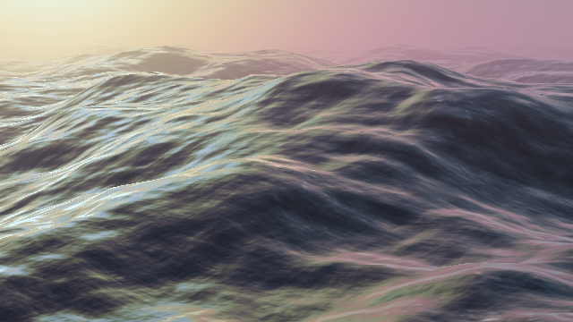
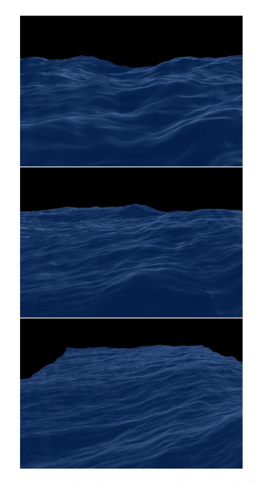
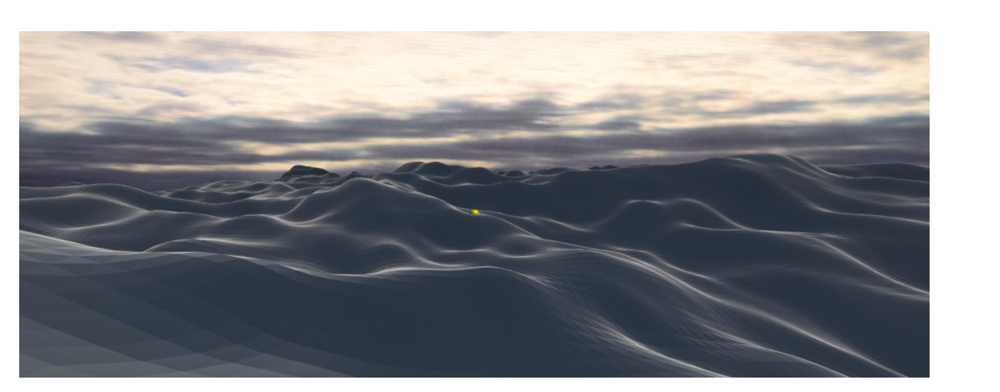
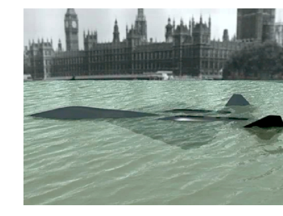

This project proposes a real-time ocean surface simulator and renderer implemented in C++ and OpenGL, with supporting
asset creation in Blender and development in Visual Studio. The central goal is to construct a water system that is both
technically and visually polished: the surface should exhibit large-scale swell motion, medium-scale directional
wave structure, and high-frequency optical detail while remaining interactive enough to support parameter exploration
through a graphical interface. Our primary technical basis is Jerry Tessendorf’s spectral ocean framework, in which ocean
motion is modeled as an evolving displaced surface rather than as a full volumetric fluid. This choice
allows us to focus on the regime most relevant to our target imagery—cinematic open water viewed near the surface—while
keeping the project feasible within the final-project schedule.
The work is organized around four tightly integrated production tracks. The first track concerns surface geometry and
numerical motion: we will generate an ocean mesh, drive it with a spectral or multi-wave displacement model, compute
evolving slope and normals, and, if time permits, introduce crest sharpening through choppy horizontal displacement. The
second track concerns water appearance: we will implement a GLSL shader that combines Fresnel-weighted reflection, bluish
absorption or transmission color, filtered detail textures, and HDR environment response to produce a surface that reads
as water rather than as a generic reflective material. The third track concerns physical interaction and local disturbance
factors: although the baseline project is focused on open-ocean behavior, we will investigate lightweight mechanisms for
click-driven ripples, disturbance emitters, or simple obstacle interaction if the core system stabilizes early enough. The
fourth track concerns environment, interface, and evaluation: we will expose numerical controls for the simulation and
renderer, construct debug views for normals and displacement, and reserve explicit time for milestone and final media
production so that the final presentation quality matches the technical work.
The final result we seek is a real-time renderer whose water exhibits the visual qualities associated with convincing ocean
imagery: a coherent swell structure, sharper directional ripples at grazing angles, a dark bluish body color, subtle
atmospheric softening, and reflected environmental color that contributes to the surface without overwhelming it. This
proposal therefore treats the project not as a single shader exercise and not as a pure simulation exercise, but as a
carefully structured synthesis of geometry, optics, filtering, interaction design, and presentation. In that sense, the
project directly extends the semester’s work in geometry processing, shading, texture sampling, and filtered rendering
into a single integrated system.
Visual Direction
Our aesthetic target is a low-angle ocean rendering in which the viewer primarily reads the water through its changing
surface slope, reflected environment, and bluish subsurface response. The renderer should therefore prioritize broad
surface behavior and high-quality optical response over overly dense mesh detail or unnecessary volumetric complexity.

Figure 1. Final visual target for the project: a reflective bluish ocean surface with broad swells, fine
grazing-angle detail, and a softened distant horizon.
Problem Description
Convincing ocean rendering is difficult because the phenomenon is inherently split between surface behavior and surface
optics. A mathematically animated height field does not automatically look like water, and a visually attractive shader
does not by itself produce the large-scale motion, silhouette, and directional organization expected from open ocean
waves. Our project addresses this dual requirement directly. We will model the water as a dynamically displaced surface
whose motion is governed by a spectral wave formulation, and we will render that surface using view-dependent optical
response rather than relying on a static painted texture. This makes the project appropriate for a graphics-course final
project: it is grounded in mathematical modeling, but it also requires careful reasoning about rendering, filtering, and
interactive presentation.
The most important design decision is scope control. We are not attempting to produce a full Navier–Stokes fluid solver,
large-scale splashing, or arbitrary topology change. Instead, we are targeting the specific regime that matters to our
desired final imagery: real-time open-water motion observed from a cinematic camera position near the surface. Within this
regime, a surface-based approach is both more realistic for the schedule and more visually aligned with our goals. It also
creates a natural division of labor across geometry, shading, interaction, and interface work without forcing the project
into an unmanageable research problem.
The semester’s earlier assignments motivate this approach naturally. The project draws on geometric reasoning developed in
mesh-based assignments, on filtered texture sampling and mipmapping used in rasterization work, and on shading and normal
handling that recur throughout graphics pipelines. Our proposal therefore aims to synthesize those ideas into a single
renderer with a coherent technical narrative and a final visual result that is clearly stronger than a simple animated
texture or a generic reflective plane.

Figure 2. Geometry expectation: layered swell motion and sufficient wave detail to avoid a flat, repeated sine-wave
appearance.

Figure 3. Shading expectation: slope-sensitive highlights and dark body color that reveal structure through reflection
rather than through painted albedo alone.

Figure 4. Interaction expectation: a localized disturbance or obstacle response that demonstrates the renderer can
support controlled physical intervention when time permits.
Goals and Deliverables
Primary Research and Production Goals
The first goal of the project is to determine how much of a convincing ocean image must come from the simulated surface
itself and how much must come from the shader. Our expectation is that geometry and optics are inseparable: the geometry
establishes wave organization, crest motion, and normal orientation, while the shader determines whether those orientations
are perceived as water through Fresnel reflection, filtered detail, and controlled absorption. The second goal is to
evaluate how far a real-time OpenGL implementation can be pushed within the course timeline without sacrificing visual
coherence or code stability. The third goal is to integrate the semester’s earlier ideas—geometry, shading, and filtered
texturing—into a single final system with clear presentation value.
Baseline Deliverables
The baseline deliverable is a real-time ocean renderer with a stable animated surface, a physically motivated water
shader, and a usable control interface. Concretely, this means a displaced ocean mesh driven by a spectral or multi-wave
model, computed normals suitable for shading and debugging, a water appearance model that combines reflection, bluish body
color, and filtered supporting textures, and a GUI exposing the principal numerical controls for wind, amplitude, chop
strength, tint, fog, and playback. The baseline also includes presentation readiness: debug modes, captured screenshots,
and a stable interactive application suitable for milestone and final demonstration.
Aspirational Deliverables
If the baseline stabilizes early, we will pursue two extensions. The first is geometric refinement through choppy
displacement or a related crest-enhancement technique, allowing the surface to move beyond a purely smooth vertical height
field. The second is limited local interaction, such as ripple injection, disturbance emitters, or lightweight obstacle
response. These are meaningful extensions because they deepen the project technically without altering the central visual
direction. They are, however, explicitly secondary to the quality of the main ocean renderer.
Evaluation Criteria
We will evaluate the project along three axes. Visual success means that the rendered water plausibly resembles our
reference target rather than appearing flat, plastic, or underdeveloped. Technical success means that the renderer
maintains stable interactivity under live control while exposing meaningful parameters and debug modes. Presentation
success means that the system is sufficiently polished and well-documented to support a strong milestone and final report,
with images and short clips captured throughout development rather than assembled at the last minute.
Part 1: Ocean Geometry and Numerical Wave Behavior
From Spectral Data to a Moving Ocean Surface
The spectral surface itself will follow Tessendorf’s Fourier representation
The first production track concerns the ocean as a geometric object. We will represent the sea as a tiled grid mesh whose
vertices are displaced over time by a wave model. The earliest implementation milestone is a stable prototype that proves
the rendering path, after which we will replace the simplest motion with the more physically credible spectral
formulation. This part therefore includes mesh generation, time-evolving displacement, normal computation, and any
crest-sharpening enhancement that remains feasible after the core system is stable.
Mesh Construction, Displacement, and Normal Reconstruction
The wave spectrum will be initialized from the Phillips model
The geometry implementation begins with the construction of the base ocean patch and the update loop that moves it every
frame. Once that infrastructure is in place, we will implement a first working multi-wave prototype so that shading and
camera work can begin immediately. The main numerical target is then the spectral model itself: initialization of the wave
amplitudes, evolution over time, and reconstruction of the displaced surface. From there we will compute slope and normals
for use both in the water shader and in debugging modes. If timing allows, we will add choppy horizontal displacement to
sharpen crests and improve the perceived realism of the surface.
What the Geometry Stage Should Already Show
By this stage, the renderer should already expose the core geometric quantities that later stages depend on:
If we reach the choppy-wave diagnostic stage, we can also monitor folding through the Jacobian
\[
J(\mathbf{x}) = J_{xx}J_{yy}-J_{xy}J_{yx},
\]
which provides a physically motivated signal for foam masks or for identifying when the mapped surface begins to overlap.
By the end of this track, the project should already possess a persuasive animated ocean surface. Even before advanced
optical work, the renderer should show broad swell motion, directional structure, and a stable displaced mesh that can be
visualized in shaded, wireframe, and normal-debug modes. This part is the numerical backbone of the final project and
establishes the geometry on which every later effect depends.
Part 2: Surface Shading, Texturing, and Water Appearance
Why the Surface Still Needs Optics
The optics stage begins with the surface normal inherited from the simulation, since reflectivity depends strongly on local slope:
This gives the shader a direct mathematical bridge from the simulated wave field to the final visual appearance.
The second production track is responsible for making the ocean read visually as water. The displaced mesh produced in the
first track is necessary but not sufficient; without optical response, the result would still resemble a generic animated
surface. This track therefore addresses water appearance directly through reflection, color response, filtered texture
detail, and environmental lighting.
Building the Water Shader and Texture Pipeline
The reflected viewing direction will follow the specular reflection law
Tessendorf’s Fresnel reflectivity will then be evaluated by
\[
\begin{aligned}
R &= \frac{1}{2}\biggl[\frac{\sin^2(\theta_t-\theta_i)}{\sin^2(\theta_t+\theta_i)} + \frac{\tan^2(\theta_t-\theta_i)}{\tan^2(\theta_t+\theta_i)}\biggr],\\
T &= 1-R.
\end{aligned}
\]
We will implement a GLSL water shader that responds to the changing surface normals produced by the simulation. The shader
will include Fresnel-weighted reflection so that grazing angles brighten naturally, a dark bluish absorption or
transmission-style contribution so that lower-reflection regions still read as water, and supporting mipmapped texture
assets for high-frequency detail. Blender will be used to author at least one HDR environment and any supporting normal or
noise textures we decide to incorporate. Those assets will then be filtered and sampled in OpenGL rather than treated as
static painted surfaces. Finally, we will add controlled fog or haze so that the distance response of the scene remains
coherent and cinematic.
What Will Make the Surface Read as Water
At the shader-composition level, the paper’s simple water model mixes reflected sky and transmitted upwelling light as
We will adapt this structure to an OpenGL implementation by sampling an HDR environment for the reflected term and combining it with our bluish body color, fog, and filtered detail normals.
By the end of this track, the renderer should exhibit the qualities that distinguish water from a simple reflective plane:
strong grazing-angle highlights, a coherent bluish body tone, variation derived from the surface normal field, and
filtered fine detail that enriches the image without replacing the underlying simulation. This part is where the project’s
final visual identity will emerge.
Part 3: Physical Interaction, Collision, and Local Disturbance Factors
Adding Local Response Without Turning This Into a Fluid Solver
For local interaction, Tessendorf notes that the full FFT ocean is not ideal, so the interaction subsystem will be grounded in the iWave update
This gives us an explicit update rule for propagating local disturbances from one frame to the next.
The third production track addresses the extent to which the ocean can respond to local intervention without becoming a
full fluid simulation project. We treat this track as explicitly secondary to the quality of the main ocean renderer, but
it remains valuable because it can demonstrate that the system is not merely a passive playback of precomputed motion.
Ripple Injection, Disturbance Sources, and Obstacle Tests
If we extend interaction beyond a simple source impulse, the shallow-water modification described in the paper replaces the propagation operator by
where \(D\) denotes water depth. For obstacle tests, we will use the paper’s masking idea conceptually: values near \(0\) suppress water motion inside the object, values near \(1\) preserve the wave field outside it, and fractional edge values provide antialiasing at the boundary.
Our baseline interaction ambition is intentionally modest. The most likely candidate is a click-driven ripple or point
disturbance source that injects visible motion into the surface. If the core renderer stabilizes early enough, we will
investigate whether this can be extended to disturbance emitters or simple obstacle interaction. The purpose of this work
is not to solve a general collision problem, but rather to demonstrate one meaningful local interaction mechanism that can
be explained and shown clearly during the final presentation.
A Practical Interaction Goal for the Final System
Our interaction goal is intentionally modest: inject a localized source term, observe stable propagation under the iWave step, and keep the interaction mathematically consistent with the surface model rather than introducing a separate ad hoc animation system.
The output of this track will either be a lightweight but successful local interaction model or a clearly documented
stretch subsystem whose implementation status is honest and technically justified. In either case, the project schedule
will not be compromised for the sake of interaction features that do not materially improve the final renderer.
Part 4: Environment, GUI, Evaluation, and Deliverable Integration
Turning the Renderer into a Usable, Demonstrable System
The interface layer will expose the numerical parameters that actually control the simulation. In particular, the discretization and sampling knobs correspond directly to
so patch size \((L_x,L_z)\) and grid resolution \((M,N)\) are not cosmetic settings; they determine what wavelengths and spatial detail the renderer can actually represent.
The fourth production track ensures that the project is usable, presentable, and evaluable as a final project rather than
as an isolated code experiment. This includes the interface for numerical control, the debug views needed for development,
and the disciplined production of screenshots and clips required by the milestone and final deliverables.
Numerical Controls, Debug Views, and Media Workflow
The GUI will map directly to the principal physical and rendering parameters in the paper: wind speed \(V\), wind direction \(\hat{\mathbf{w}}\), gravity-driven scale \(L=V^2/g\), small-wave damping length \(\ell\), choppiness \(\lambda\), and time step \(\Delta t\). It will also expose optical controls derived from the Fresnel stage, such as index of refraction, tint weighting, and fog density.
We will build an ImGui panel exposing the principal simulation and shading parameters, including wind direction, wave
amplitude, chop strength, color response, fog density, and playback controls. We will also implement debug views for
displacement, normals, wireframe structure, and any local interaction or foam mask that emerges during development. Just
as importantly, we will reserve explicit time in the schedule for capture and editing of media assets. This track
therefore includes not only application-facing engineering but also the workflow discipline required to support a strong
milestone and final presentation.
What This Layer Contributes to the Final Project
The main debug views will therefore be mathematically meaningful rather than purely cosmetic: surface height \(h(\mathbf{x}, t)\), slope magnitude \(\|\nabla h\|\), normal direction \(\hat{\mathbf{n}}_S\), displacement \(\mathbf{D}(\mathbf{x}, t)\), reflectivity \(R\), and, if implemented, the fold diagnostic \(J(\mathbf{x})\). These views are what will let us verify that the renderer is behaving according to the underlying model instead of only “looking about right.”
By the end of this track, the project should be straightforward to demo live, easy to inspect during debugging, and fully
documented with a visual record of its development. This is the production layer that protects the project from becoming
technically interesting but poorly communicated.
Schedule
Week 1 — Core Geometry, Application Setup, and First Working Prototype
The first week is devoted to establishing a real working renderer as quickly as possible. On the geometry side, we will
construct the ocean patch, build the update loop, and implement an initial multi-wave displacement model so that the
application immediately shows animated water rather than an empty framework. On the rendering side, we will create a first
shader with controllable color and basic specular response, sufficient to support camera and presentation tests. In
parallel, we will set up the Visual Studio project, OpenGL boilerplate, shader loading, parameter containers, and an
initial ImGui panel. By the end of the week, the application should already be runnable and interactive, even if the
visual quality remains provisional.
Week 2 — Real Ocean Motion, Surface Filtering, and Milestone Readiness
The second week is dedicated to replacing the simplest prototype motion with the main wave pipeline. This includes
spectral initialization and time evolution, integration of the resulting displacement into the renderer, and the first
convincing normal-driven shading pass. We will also introduce the first real environment response through an HDR asset
authored in Blender and begin integrating filtered supporting textures, such as detail normals or noise. During this same
week, the GUI will expand to expose the principal numerical controls for the simulation and appearance. Because the
milestone sits so close to the development schedule, week two also reserves time for screenshot capture, milestone
planning, and the identification of what the application will be ready to demonstrate.
Week 3 — Choppy Refinement, Local Interaction, and Presentation-Quality Look Development
The third week transforms the renderer from technically functional to visually persuasive. If the numerical foundation is
stable, we will introduce choppy displacement or a related crest-enhancement strategy and tune the simulation at the
parameter ranges we expect to use in the final presentation. Shading work during this week focuses on final visual
credibility: bluish water response, HDR reflection balance, haze, filtered detail, and exposure tuning. This is also the
appropriate window for local interaction work, since by this point we will know whether the baseline renderer is stable
enough to support it. If interaction remains unreliable, we will intentionally freeze it and redirect the remaining time
toward visual polish and documentation.
Week 4 — Integration Freeze, Video and Presentation Production, and Final Deliverables
The final week is reserved primarily for stabilization and communication. We will limit technical changes to bug fixes,
integration cleanup, and small appearance refinements, while the larger share of time is dedicated to preparing the final
report, final video, screenshots, and presentation materials. This week exists to protect the project from the common
failure mode in which the renderer is promising but the final presentation is rushed. By scheduling media production
explicitly rather than treating it as an afterthought, we ensure that the final output demonstrates the project clearly and
professionally. At the end of week four, the project should be feature-frozen, presentation-safe, and ready for final
submission.
References
Primary Reference
Jerry Tessendorf. Simulating Ocean Water. This paper is the project’s central conceptual reference for both the
spectral wave formulation and the optical treatment of the water surface. It informs our choices in surface
representation, displacement strategy, slope- and normal-driven appearance, and the separation between surface motion and
surface optics.
Implementation Platform
The project will be implemented in C++ with OpenGL and GLSL in Visual Studio, with Blender used to author HDR
environmental assets and any supporting texture inputs required by the renderer. These are implementation tools rather than
conceptual references, but they define the practical environment in which the project will be built.